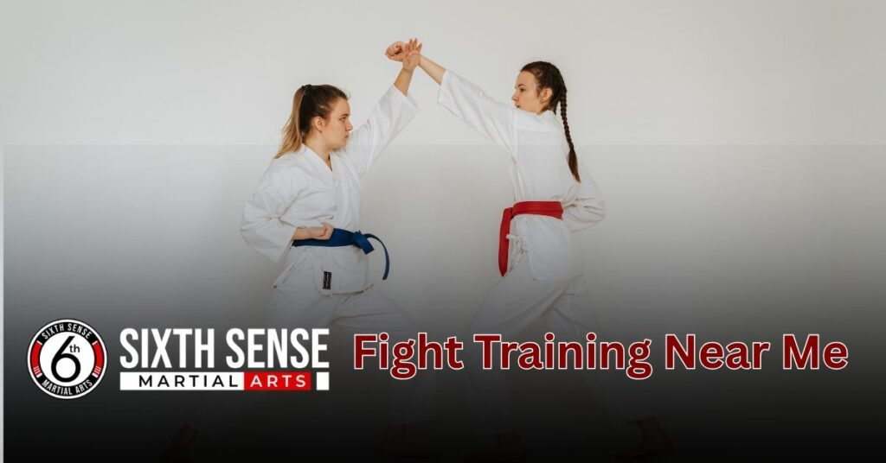
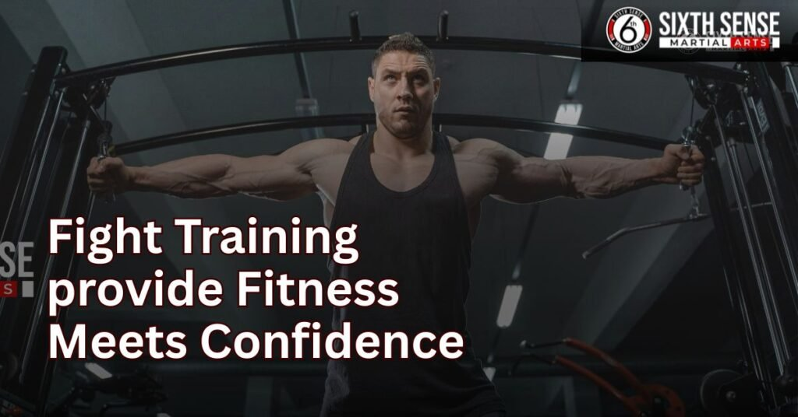

Fight Training Near Me with Flexible Pricing Plans

Fight training near me isn’t just about throwing punches it’s about finding a place that builds your strength, confidence, and something real. Something that builds both your body and your mindset. At SixthSense MMA, we go beyond just workouts.
We help you grow stronger, sharper, and more confident no matter your starting point. With expert coaches, a clean and focused training space, and a community that supports your journey, our gym is where real transformation begins.
What Fight Training Really Means
Real fight training goes far beyond just learning how to throw punches or build strength. It’s a full-body and mind transformation where you develop discipline, grow confidence, and sharpen your mindset through every practice.
Whether it’s Muay Thai, MMA, boxing, or Brazilian Jiu Jitsu, the goal isn’t only to be physically strong, but also to stay calm in stressful moments, make better decision-making, and treat your opponents with respect. A good coach teaches not just technique, but also how to manage pressure, control frustration, and stay focused during every match.
Through this journey, you start to understand the rules, learn real strategy, improve timing, and build trust in yourself and your team. Your self-worth rises as your reflexes, endurance, and inner strength develop, shaping you into a more confident, emotionally and mentally grounded person, both inside and outside of training.
Physical Fitness + Mental Strength Ka Combination
In real training, you don’t just work on your fitness you shape your character, sharpen your reflexes, and gain control over your body and emotions. Combining physical effort with a focused mindset helps you manage your weight, stay fast on your feet, and stay calm when facing tough opponents.
As you learn new skills from your coach, your ability to make quick decisions, handle pressure, and maintain balance improves daily. You become better at staying in control not just in a match, but in your everyday life. With time, your patience, confidence, and overall strength grow, making you a powerful and complete version of yourself both mentally and physically.
This mix builds a foundation of true discipline and long-lasting self-worth.
Looking for “Fight Training Near Me”? Sixth sense mma has covered
If you’re tired of making excuses or wasting time stuck in traffic, it’s time to choose a local gym that fits your lifestyle. Real people who want to practice hard, advance their skills, and receive encouragement along the way are the target audience for Sixth Sense MMA.
Whether you’re coming from home, school, or work, our space makes it easy to start, stay consistent, and feel like you’re part of something bigger. With a clear focus on long term progress, not just short-term hype, we help you build the mindset and skills that actually improve your lives, inside and outside the ring.
When you train here, you’re not just following a trend you’re stepping into a place where you’re taught, corrected, cheered, and pushed to become your best.
Location Convenience Matters of Sixth Sense MMA
Choosing a gym close to you means fewer excuses, less travel, and more time to actually train. Our nearby location is perfect for busy people who want to squeeze in a powerful session before or after school, home, or work. You won’t be wasting time stuck in traffic or driving across town you’ll be using that time to build real skills and keep a regular routine. Convenience matters because it keeps your mindset steady, your training consistent, and your commitment strong. When something is close, it’s easier to stay with it and that’s how real progress happens.
Real Coaches, Real Progress Not Just Trendy Workouts
At Sixth Sense MMA, you don’t just follow a routine made for social media. Our coaches are here to teach, make real-time corrections, and guide you through every step. They help you push past limits, stay focused, and create a strategy that fits your personal goals.
You’re not chasing a trend you’re getting lifelong value from training that improves your technique, strengthens your mindset, and helps you become a better version of yourself. Every session is about building a strong foundation, not just looking busy.
Save Time, Stay Committed Local Training Benefits
Training nearby saves time, cuts down the stress of long travel, and keeps your energy focused on real progress. When your gym is local, it becomes easier to make training part of your daily lifestyle. You don’t have to battle with traffic or lose momentum you’re always just a few steps away from your next session.
This closeness helps you stay on track, build stronger habits, and actually enjoy the process. When something is within reach, you’re more likely to stick with it, stay consistent, and see better long-term results.
What Makes SixthSense MMA Different?
At SixthSense, we don’t believe in the one size fits all approach. Our training is designed to be personalized, whether your goal is weight loss, building confidence, mastering self-defense, or serious prep for a match inside the cage. You’ll be guided by certified, experienced, and skilled coaches who provide honest insight, not hype.
Every student is welcomed into a close-knit community where your growth is our focus, and your fitness journey is treated with respect. Our programs are created by real professionals, not trends whether you’re just starting out or training at a high level, we have plans that are suitable for your pace, goals, and lifestyle. As you train, you learn the strategy behind every move, sharpen your mind, and feel the motivation to become better from the inside out.
We’re here to help you stay fit, feel healthy, and move with wisdom, while building real results in your body and your mindset. At SixthSense MMA, you’re not just another member you’re part of a real journey with people who take your goals seriously and stand with you all the way.
Comparison Table: SixthSense MMA vs. Typical Gyms
| Feature | SixthSense MMA | Typical Gym |
|---|---|---|
| Training Approach | Personalized, strategy-based | Generic, one-size-fits-all plans |
| Coach Experience | Certified, skilled, experienced | Often basic or group-led trainers |
| Focus | Real results, mental and physical growth | Mostly physical appearance |
| Programs | Tailored for weight loss, self-defense, or competition | General workout programs |
| Environment | Close-knit, supportive community | Crowded, individual-focused |
| Learning Curve | Learn with wisdom, insight, and correction | Minimal instruction or feedback |
| Motivation & Confidence | Builds real confidence, inner motivation | Often self-guided |
| Lifestyle Fit | Flexible plans suitable for real lifestyles | Rigid timing, no personalization |
| Mindset & Strategy | Strong focus on strategy, mental discipline | Not usually part of training |
| Self-Defense Skills | Core part of all martial arts programs | Rare or unavailable |
Types of Fight Training Available at SixthSense MMA
At SixthSense MMA, we believe in training that prepares you for both the real-world and the cage. Our fight programs focus on full-body conditioning, smart techniques, and building the kind of confidence that only comes through experience.
From boxing to Muay Thai, Brazilian Jiu Jitsu, and full MMA our training gives you the tools to adapt, stay alert, and perform under pressure. Whether you’re looking to improve your fitness, build strength, or learn how to control a fight from any position, our approach is practical, powerful, and real.
Boxing for Hand Speed and Defense
Our boxing program focuses on developing sharp footwork, quick punch combinations, and smart defense using blocks and head movement. You’ll train to stay alert, react with instinct, and find your timing under pressure. Boxing sharpens your hands, teaches you how to apply precise attacks, and improves your overall fitness and movement in close-quarters situations.
Muay Thai to Master Elbows and Knees
Known as the art of eight limbs, Muay Thai training at SixthSense helps you use elbows, knees, punches, and kicks with control and impact. Our sessions focus on making your striking more powerful and your defense more effective by drilling real situations you’d face in a match or in self-defense.
Jiu Jitsu for Ground Game and Control
Our Brazilian Jiu-Jitsu program teaches you how to grapple, use submission holds, and control your opponent on the ground with techniques based on leverage, not brute force. This training helps you adapt when things go to the mat and gives you the skills to stay calm, conserve energy, and win from any position. BJJ is extremely useful for both sport and real-world safety it’s how you stay in charge without needing to strike.
MMA for Real Fight Readiness
Our complete mixed martial arts program combines the best of boxing, Muay Thai, wrestling, and jiu-jitsu so you’re always ready standing or on the ground. You’ll learn how to transition smoothly between striking and grappling, how to control space, and how to respond with smart, well-timed moves.
This is where your full training comes together: strength, conditioning, confidence, and real fight-tested skills that work in the cage and in practical life.
How to Join SixthSense MMA Simple Steps
Getting started at SixthSense is a smooth and pressure-free experience built to match your goals, whether that’s improving your fitness, learning self-defense, or becoming confident in the fight world. From your very first step, we make sure the journey is clear, welcoming, and tailored to your pace.
You’ll never be rushed to commit, and there’s absolutely no confusion or hidden rules just a transparent, supportive process that respects your life and your choices.
Schedule a Free First Session
We invite you to book a free trial session so you can try our training before making any commitments. This is your chance to explore boxing, MMA, or Jiu-Jitsu with an open mind and without pressure. You’ll get to experience the energy of the gym, feel the motivation, and see how we support your fitness and self-defense journey.
Whether you’re new or experienced, this is the smartest step to take get to know us and start your path toward becoming better.
Meet Our Coaches and Choose Your Path
During your first visit, you’ll meet our certified, experienced coaches who will help you understand the training process and guide you toward the right program. Whether you’re looking to focus on real fight skills, build confidence in boxing, master control with Jiu-Jitsu, or explore complete MMA, our team is here to support your growth.
We’ll help you decide what works best for your life, goals, and personal pace. You’ll never feel lost or pushed we work with trust and honesty, letting you find your own path.
Flexible Membership Plans Without Pressure
Our membership options are built for real people with busy lives. We offer plans that are flexible, easy to adjust, and fit your schedule and budget. There’s no pressure to lock in just smart choices that match your needs.
You can pause or shift your plan anytime if life gets in the way. At SixthSense, we believe in keeping things transparent, welcoming, and stress-free, so you feel motivated, supported, and in full control of your journey.
Our Training Style Discipline, Strategy & Support
At SixthSense MMA, our training style blends physical conditioning with mental sharpness. We focus on making you stronger not just physically, but mentally too. Our goal is to help every student become more confident, disciplined, and technically skilled no matter their background or starting point.
Elements of Our Training Style:
1. Discipline Builds Strong Habits
Discipline is the foundation of every great fighter. With consistent training and steady routines, beginners improve faster and learn to focus their energy. Every session shapes your mindset and helps you build the right form from day one. Our coaches explain your mistakes without judgment and guide you patiently.
2. Strategy Makes You a Smart Fighter
MMA isn’t about throwing fast punches it’s about timing, footwork, and tactics. We train you to fight with attention, not just aggression. Our coaches help you develop a personal strategy that fits your pace and goals. This way, you train smarter, not harder, and grow with confidence.
3. Support That Keeps You Going
You’re never alone at SixthSense. Our gym culture is built on respect, not ego. Every coach, every session, and every teammate is here to support your progress. When you feel stuck or unsure, we’re here to lift you back up because real improvement comes with the right guidance.
4. Fitness Meets Confidence
Training here doesn’t just shape your body it transforms your mindset too. As your fitness improves, so does your self-confidence. Whether you’re a beginner or already in shape, we help you feel stronger in every way. You’ll leave each session feeling better, more focused, and proud of your progress.

Customers Reviews:
Amanda R. from Phoenix, AZ
I was nervous walking into an MMA gym for the first time, but the coaches at SixthSense MMA made me feel at home. They took the time to explain every move and made sure I felt safe. Six months later, I’ve lost 18 pounds and gained real confidence. I’m hooked.
Jason M. from Dallas, TX
I’ve trained at a few places before, but the personal coaching here is on another level. The trainers actually watch your form, help you improve, and push you just the right amount. SixthSense MMA isn’t just a gym. It’s a community that keeps you coming back.
Nina W. from San Diego, CA
I searched for fight training near me and landed at SixthSense. Best decision I made. I joined to feel stronger, and now I’m in the best shape of my life. The women’s classes feel safe and empowering. Real coaches. Real progress.
Luis T. from Miami, FL
I started as a beginner and now I’m preparing for my first amateur fight. The coaching team at SixthSense MMA helped me grow step by step. No shortcuts. Just solid skills. I’ve learned more in three months here than in a year at my old gym.
Rachel K. from Portland, OR
The coaching style is what sold me. It’s not about hype. It’s about real attention and support. They adjust the workouts to your pace and still push you to grow. I’ve gained more than just technique. I’ve found mental focus and self-belief.
Tyrone B. from Atlanta, GA
As a former college athlete, I needed something challenging and SixthSense MMA delivered. Their MMA and Muay Thai classes gave me a whole new level of conditioning. The coaches know their stuff and it shows in every session.
Kim L. from Chicago, IL
I joined after moving into the area and looking for something close. What I got was more than convenience. I found expert coaching and a supportive group. The progress I’ve made in just eight weeks is amazing. I recommend this place to everyone.
Brian C. from Denver, CO
I’ve trained at box gyms before but SixthSense MMA is different. It’s clean, focused, and full of serious but friendly people. The coaches care and it shows in how they treat you. I came in overweight. Now I feel light, strong, and confident.
Jasmine D. from Los Angeles, CA
I used to struggle with consistency but the vibe at this gym made me show up every week. The coaches don’t just train you. They check in on you and push you at the right pace. SixthSense MMA gave me back my drive.
Noah S. from Brooklyn, NY
What stood out for me was how personal the coaching felt. I never felt lost or left behind. They make sure every person in the room understands the technique no matter their level. If you’re looking for quality fight training near you this is it.
Contact us
Ready to begin your MMA journey with a team that supports every step? At SixthSense MMA, whether you’re a beginner or building your skills, you’ll feel confident, motivated, and welcomed. Our local gym offers a clean training space, expert coaching, and real community support.
You can book a free session today and meet the team without pressure we’ll help you grow at your own pace with consistent training, discipline, and access to classes that match your fitness level.
Within this space, you’ll find not just workouts, but the motivation and guidance to stay strong, improve your form, and unlock your true strength. Walk in today, punch past hesitation, and kickstart your path to real results
Conclusion
In addition to providing fight training, SixthSense MMA helps you develop self-confidence, steady progress, and a focused, fit lifestyle. Our training programs are designed to teach smart movement, real discipline, and lasting fitness so you can rise to every challenge.
Whether you’re just starting or leveling up, our team is here to help you train with purpose and confidence. This is your chance to make a real difference in yourself one session, one move, one step at a time. Believe in your fitness, trust the process, and let us help you become the strongest version of yourself because at SixthSense MMA, we train for more than fights. We train for life.
FAQ's
In reality, SixthSense MMA constantly welcomes newcomers.Whether it’s your first day or your first punch, our experienced trainers are here to guide you through the basics at a comfortable pace, with zero pressure. You’ll never feel judged, only supported. Many of our students started from scratch and were surprised at how quickly they learned when given the right structure and mindset.
Our approach is built on strong fundamentals, step-by-step learning, and creating a space where every fighting skill is taught with care and judgment free focus. So if you’re ready to start, we’ll show you the way one movement, one class, one win at a time.
Yes Fighters training at SixthSense is one of the most effective and fun ways to support weight loss. Each session blends cardio, muscle-building, and full-body movement to burn calories, boost your metabolism, and increase overall stamina.
Our workouts are designed to build lean strength, improve your routine, and keep things fresh and motivating so you actually stick with it. Whether you’re new to training or ready to level up, you’ll burn fat, build muscle, and feel your body grow stronger every week both inside and out all while enjoying the energy of our high-impact, results-driven gym.
Absolutely. At SixthSense MMA, we proudly offer women-only classes designed to provide a safe, focused, and respectful space for every female fighter whether you’re just starting out or already experienced. Our coaches understand the unique goals and comfort levels of each woman and are here to offer real support, build your confidence, and help you feel strong at every fitness level.
These sessions aren’t just about technique, they’re about creating an environment where you’re seen, heard, and supported. If you’re ready to join a community that values growth with respect, we’ll help you take that first step with purpose.
Absolutely! Our training is designed for all levels—whether you’re a complete beginner or an experienced fighter. Coaches provide step-by-step guidance to ensure proper form and confidence.
Training at SixthSense MMA builds discipline, focus, and emotional control. You’ll learn to handle pressure, make quick decisions, and stay calm—skills that apply both in and out of the gym.
Train with us in Coppell
The first class is free. Shorts, a t-shirt and a water bottle. We lend the rest.
Book a free class